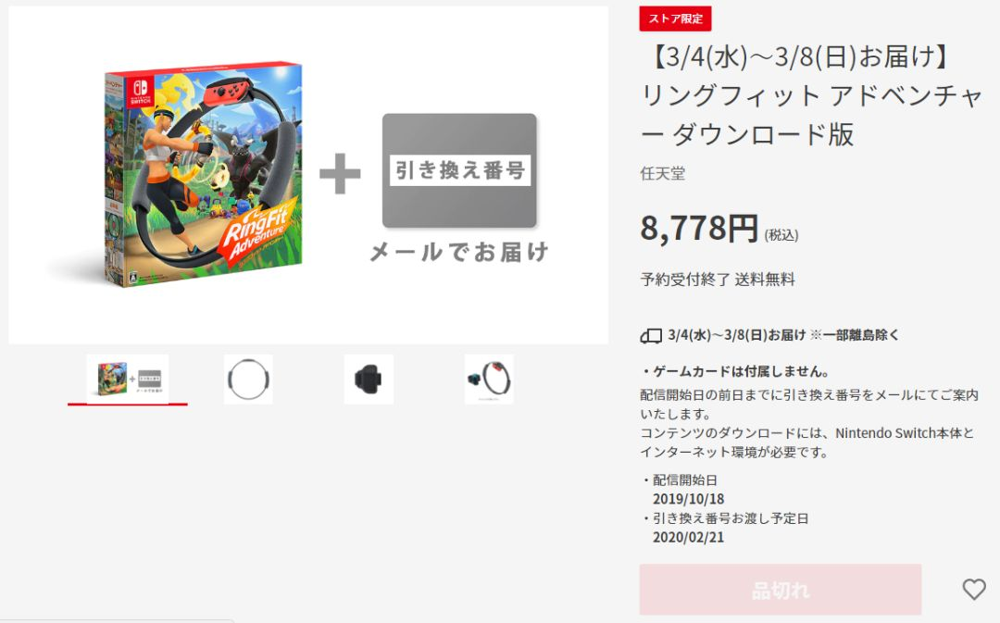
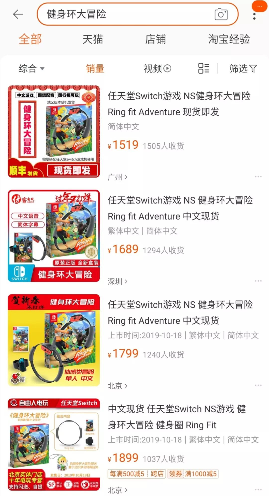
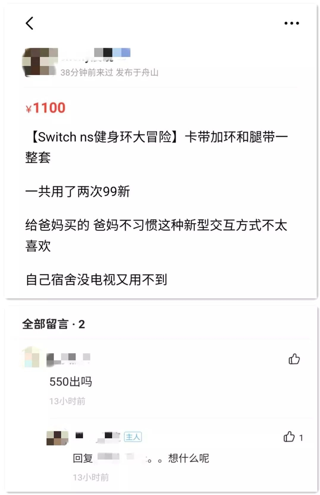
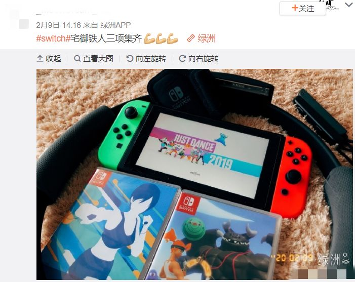

健身行业冰火两重天：线上用户量翻10倍，线下每月损失千万
原文链接 备份链接 图片来源：unsplash 记者：伍洋宇 编辑：文姝琪 “ 健身行业的线上迁徙或许是一个临时逃生出口，但等到豁然开朗时，有几成创业者能伫立到最后？ ” 韩佳至始至终都没有提到最坏的可能，老板告诉她这次必须挺过去。 作为 …

文/胡月
从2019年年底开始，一款名为《健身环大冒险》的Switch游戏在社交网站上迅速走红。在这款主打健身功能的游戏中，你需要通过做出相应的健身动作释放技能，一路打怪升级，推进剧情。
将枯燥的健身运动游戏化，或许正是这款游戏受到网友青睐的原因。
但令人惊讶的是，随着新冠肺炎疫情的突然爆发，这款游戏的需求量在春节期间骤增，导致游戏价格一路水涨船高，如今电商平台上的售价已超发售价的3倍。

骤增的需求，飙涨的价格
2019年10月，Switch游戏《健身环大冒险》正式发布。凭借健身主题以及“国民老婆”新垣结衣的加持，游戏上市前发布的预告片便已吸引了很多玩家。

图片来源：《健身环大冒险》预告片截图
随后，随着各大博主、UP主相继推出测评、试玩视频，这款游戏在社交平台迅速火爆。发售价约558元的游戏，去年底在电商平台上的价格就已接近700元。

当时，不少网友都认为价格被炒得过高，决定观望一阵再做打算。但谁也没有想到，期望中的降价没有等到，随着新冠肺炎的突然爆发，游戏的价格反而一路水涨船高。
2月10日，这款游戏在电商平台上的最高售价已超1500元，并持续上涨，如今甚至接近1900元，已达发售价的3倍。
2月10日，有网友发微博吐槽游戏价格
▼

图片来源：微博截图
2月17日的价格，大家感受一下
▼

即使是在二手交易平台上，只玩过几次成色较新的游戏，价格也已经超过千元。

这款游戏为什么这么火？
传统的健身方式比较枯燥，需要不停地重复相同的动作，对于意志薄弱的健身新手来说非常“劝退”，这也是很多人一直在计划健身但从未真正开始的原因。
而将健身与游戏相结合，就将原本枯燥的运动变得有趣了很多，游戏自带的即时反馈机制也让玩家能够第一时间看到健身的成果。
而除了娱乐性之外，这款游戏还有一定的观赏性，再加上游戏自带的热度，选择录制试玩视频的博主和UP主自然不在少数，无形中增加了这款游戏的曝光度。
另外，游戏内的排行榜功能除了具有一定的激励作用外，也是吸引玩家的一大要素。热衷为自己“打榜”的朋友们，这下终于找到了抢占微信步数排行第一之外的乐趣。
当然，《健身环大冒险》的爆火也有偶然因素在内。
春节前突发的新冠肺炎疫情导致很多人只能宅在家里，严重缺乏运动。
对于长期健身或是有健身需求的人来说，这款游戏确实具有一定的专业性。游戏搭配的外设可以看做是一个普拉提圈，而游戏中涉及的动作也多为普拉提动作。
B站UP主@灵魂健身杨老师就曾发布过一则视频，从专业角度分析了这款游戏是否具有健身功能，答案是肯定的。

图片来源：B站UP主@灵魂健身杨老师视频截图
据他估算，如果标准地完成动作，打两次大BOSS就可以消耗200~300大卡。
而对于宅在家太久，只是想随意活动活动筋骨的人来说，这款游戏也比枯燥地跟着健身APP练习来得有趣很多。
另外，受疫情的影响，目前这款游戏仍处于缺货状态。
需求与供给严重不对等的情况下，游戏的价格会被炒至“天价”也就不难理解了。
越来越专业的健身游戏
事实上，健身与游戏的结合早已不是什么新鲜事。
1998年，日本科乐美（KONAMI）公司推出了一款视频游戏——《Dance Dance Revolution》（以下简称《DDR》），也就是我们熟知的跳舞机。
在大部分80后、90后的童年记忆里，
跳舞机绝对是游戏厅里的风云项目，
如今早已更新换代
▼

图片来源：DRS舞律炫步官方抖音号
随后，这种新鲜的机器在美国、日本等国家迅速走红。此前曾有不少研究证实了它的健身功用：即使是初级游戏水平，游戏时间超过一小时，就有助于儿童减轻体重。
因此，当时很多美国家长用《DDR》来帮助自己的孩子控制体重，强健体魄。
而随着这类新生事物的出现，人们将 exercise（运动健身）与video game（视频游戏）结合，制造出一个专有名词——Exergame，即运动电子游戏。
事实上，在《健身环大冒险》爆火前，各大主机游戏平台都曾推出过运动电子游戏。
比如Wii平台上的《Wii Fit》、XBOX 360体感周边外设Kinect配套发布的游戏《Kinect Sports》《Kinect Adventure》等。
而在《健身环大冒险》之前，Switch就已相继推出了《有氧拳击》和由育碧发行的《舞力全开》，这三款游戏如今也被网友称为Switch“铁人三项”。

图片来源：微博截图
从健身游戏的更新迭代中我们可以发现，健身游戏在保留自身娱乐性的同时也在逐渐变得更加专业化。
健身游戏会冲击健身行业吗？
与健身游戏销售火爆相对应的是传统健身房的惨淡现状。
最近两年，包括浩沙在内的传统健身房深陷“倒闭潮”，行业内一直采用的预付卡模式也屡遭诟病。而突然爆发的疫情，更加重了传统健身房的压力。
不过，行业内也因此出现了一些新趋势，健身教练们纷纷变身“主播”，直播上课，线上健身一度火爆。
在这样的背景下，健身游戏的不断发展，是否会对健身行业产生影响呢？
事实上，健身游戏如果想要达到健身效果，动作标准至关重要。
@灵魂健身杨老师在他的视频中以挤压健身环的动作举例，这个动作的目标是锻炼胸肌，但很多人在做这个动作的时候，由于发力姿势不准确，所以导致胸部还没有得到应有的锻炼，肩部就先酸了。

图片来源：《健身环大冒险》预告片截图
由此我们可以看到，想要借助游戏达到健身的目的，仍需要具备一定的经验和理论知识，而这恰恰是专业健身机构的优势。
此外，有媒体记者在体验游戏后对比自己在玩游戏时与在健身房运动时的心率发现：玩游戏期间心率稳步上升，但在健身房时心率则是快速上升，10分钟后就可达到出汗效果。
因此，健身游戏的功效是否能与专业健身相提并论，仍存在很多不确定性。
不过，对于有健身习惯的人群来说，在不能去健身房的日子，用游戏来保持每天的运动量或许会成为一种辅助健身的选择。
某健身群中，
有网友表示会用《健身环大冒险》来坚持运动
▼

如此看来，至少在目前，健身游戏并不会对传统健身机构产生太大冲击，但或许二者在未来可以碰撞出一些出人意料的火花。
而在这波热度过去之后，《健身环大冒险》又会不会成为落灰游戏中的一员呢？
（编辑：黄玉璐 校对：彭玉凤）


推荐阅读

点击大图 |跨省追捕、5天宣判 多地公检法稳准狠打击“口罩诈骗案”

点击大图 |国家卫健委专员：新冠肺炎虽是新发传染性疾病 但可防可治

原文链接 备份链接 图片来源：unsplash 记者：伍洋宇 编辑：文姝琪 “ 健身行业的线上迁徙或许是一个临时逃生出口，但等到豁然开朗时，有几成创业者能伫立到最后？ ” 韩佳至始至终都没有提到最坏的可能，老板告诉她这次必须挺过去。 作为 …
原文链接 备份链接 图片来源：视觉中国 记者：罗盈盈 编辑：石一瑛 “ 疫情结束后，在线健身或许成为一个新战场。 ” 最近大半个月，黄晨跟着教练Mike做过燃脂训练，跟着Icey上过流动伸展课，还跟小雨老师一起练过马甲线。 只是，这一切都 …
原文链接 备份链接 牵一发而动全身。 这周，热门动画《恋爱中的小行星》第七话将推迟一周播出。原定的播出时间将改为放送总集篇。 总集篇是一个剪辑已经播出的动画片段，是一个只有在最紧急的时刻才会使用的凑数手段。很显然，这部动画的制作遇到了 …
原文链接 备份链接 凤凰新闻客户端 凤凰网在人间工作室出品 2020年1月18日上午，天气像往常一样晴朗。在汉口中山公园西南角的一间健身房里，72岁的邱钧正向笔者描绘自己的规划——今年6月，他将前往南京参加“世界奥赛之夜”健美比赛，而 …
原文链接 备份链接 图片来源：unsplash 记者：伍洋宇 “ 在情况未得到缓解之前，Switch及其游戏价格很可能会有不同程度的走高趋势。 ” 尽管《健身环大冒险》价格走高引起了一些消费者的不满，但它可能很快连买也买不到了。 据彭博社 …